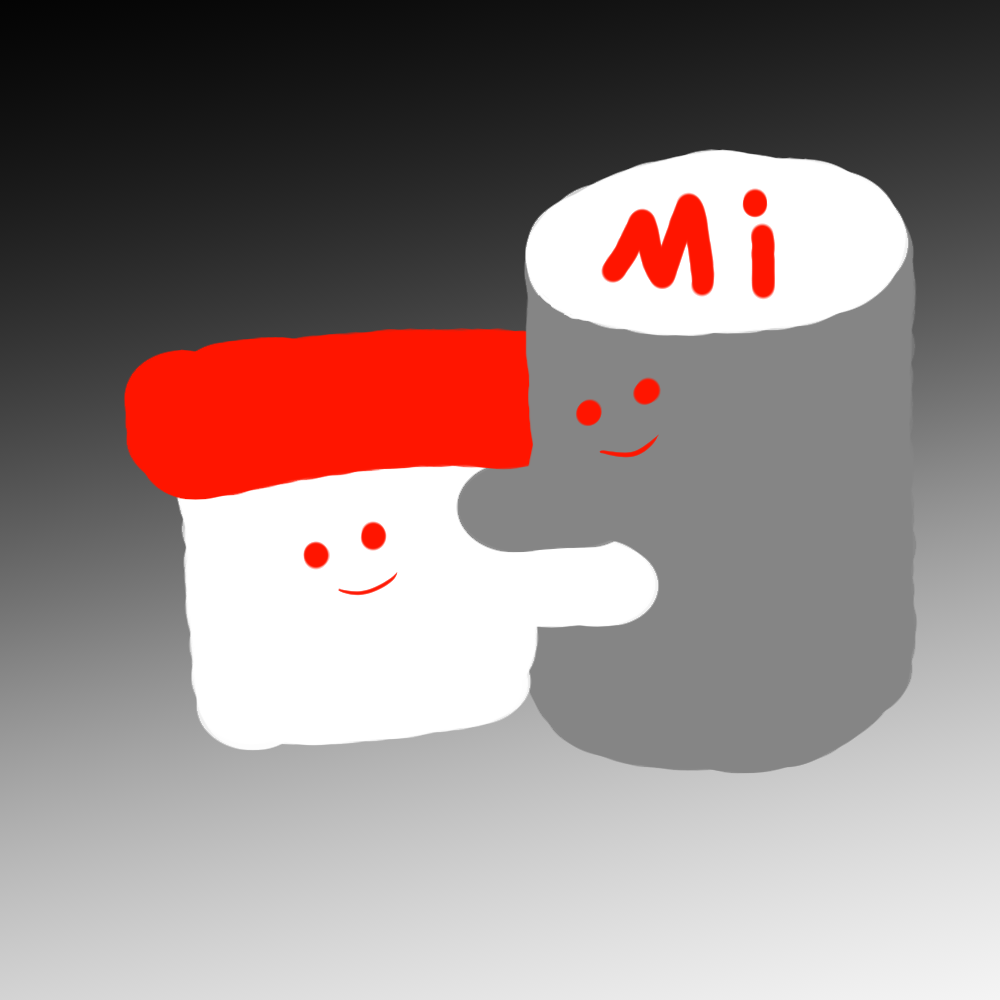

認証データの確認中...
ログインしました
おかえりなさい、ktb-000 くちばし様
記事を表示します
SAV-0006-A 「マスコット？」
危険レベル : アンコ カスタード
収容手順
SAV-0006-Aは金皿職員や黒皿職員の主な職場の中央管理局にある小部屋の小さなゲージの中に収容されています。黒皿以上の職員のみ接触可能です。
説明
SAV-0006-Aは、すしに酷似し、つぶらな瞳と開かない口、小さい手を持ち合わせ、2体の生物が抱き合っている未知の生物です。
非常に温厚な性格で人が近づくと⬛︎⬛︎⬛︎⬛︎⬛︎⬛︎

SAV-0006-A
アーカイブ
2021-1-⬛︎⬛︎
金皿職員-くちばしの愛玩用ペットとして黒皿職員-⬛︎⬛︎⬛︎⬛︎がSAV-0006-Aを贈る
注釈: 現在⬛︎⬛︎⬛︎⬛︎は財団職員ではありません。SAV-0006-Aの入手経路は不明です。
2021-2-⬛︎⬛︎
くちばしによって飼育の記録がされた
SAV-0006-Aは寿司を主食とし、人に懐きやすい性格である
鳴き声を発することはなく、また、聴覚も持たないと思われる
注釈: 特にマグロの寿司を好む
2021-4-⬛︎⬛︎
SAV-0006-Aが飼育ゲージから脱走する
この日からくちばしの髪色が急激に赤く変化した、関係性は不明である
2021-4-⬛︎⬛︎
SAV-0006-Aを発見する
付近には黒皿職員-⬛︎⬛︎⬛︎⬛︎が⬛︎⬛︎⬛︎⬛︎⬛︎⬛︎発見された、他にも多数の職員が⬛︎を流し倒れている状態で発見された
注釈: くちばしの髪色の変化が停止した
2021-5-⬛︎⬛︎
くちばしがジュールをこぼし、SAV-0006-Aにかかる
SAV-0006-Aがそれを飲むとくちばしの髪に色の変化が生じた
注釈: ジュースはアセロラジュースであった